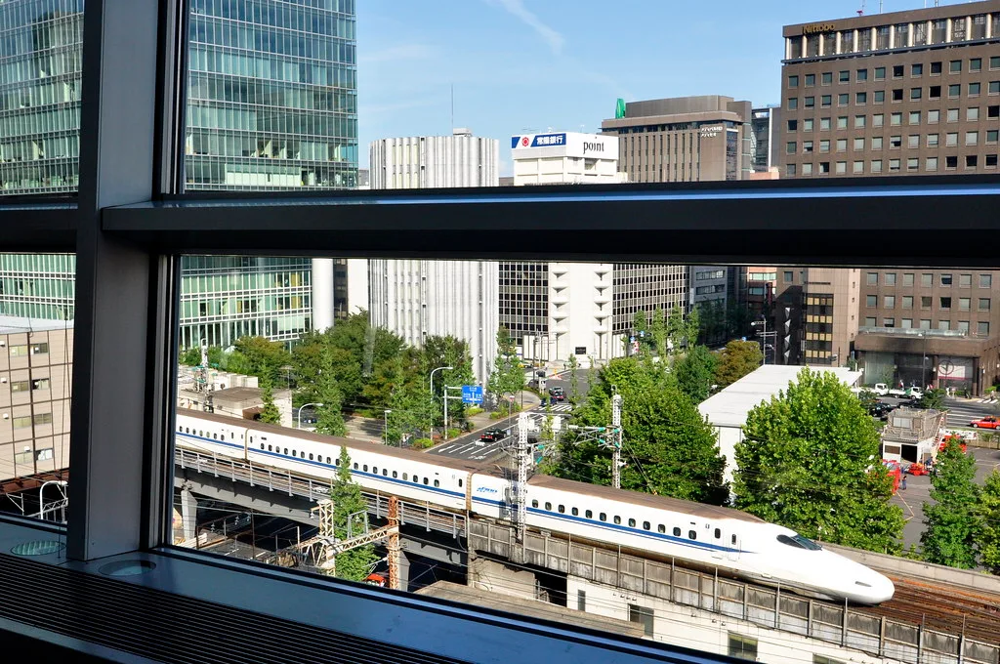
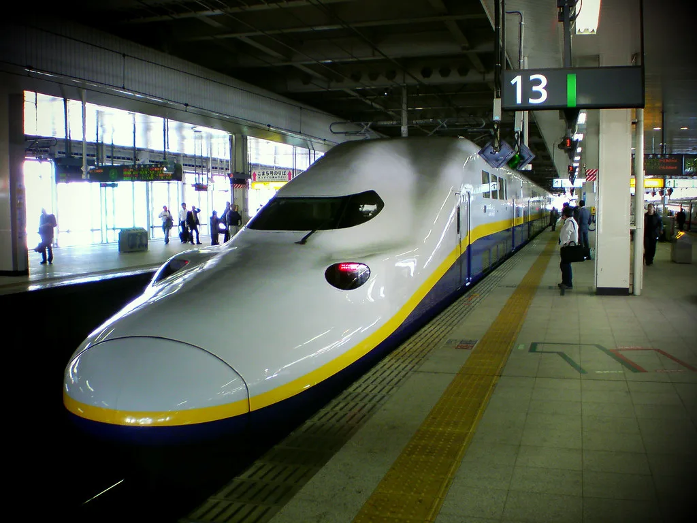

스페인에서 고속열차 두 대가 잇따라 충돌하는 사고가 발생해 수십 명이 목숨을 잃었다. 사고는 현지시각 28일 오전 9시 15분쯤 수도 마드리드 남쪽 톨레도주의 우르다와 로스예베네스 사이 구간에서 일어났다. 마드리드에서 세비야 방향으로 달리던 고속열차가 같은 선로에 멈춰 서 있던 또 다른 열차의 뒤를 그대로 들이받으면서 사고가 났다. 두 열차 모두 많은 승객을 태운 상태였던 것으로 전해졌다.
충돌한 열차는 스페인 국영철도 렌페(RENFE) 소속 열차와 민간 고속철도 업체 이료(IRYO) 소속 열차였다. 렌페 열차에는 397명이, 이료 열차에는 147명이 타고 있던 것으로 파악됐다. 두 열차를 합쳐 500명이 넘는 승객이 탑승한 상태에서 벌어진 사고였던 셈이다. 사고 직후 현장에는 구조대와 의료진이 긴급히 투입됐고, 열차 잔해 속에서 승객들을 구조하는 작업이 밤늦게까지 이어졌다.

스페인 카스티야라만차 지역정부는 사고 다음 날인 29일 집계 기준 사망자가 74명에 이른다고 확인했다. 이와 별도로 58명이 병원으로 옮겨져 치료를 받고 있으며, 이 가운데 일부는 중태인 것으로 전해졌다. 당국은 신원 확인 작업이 계속 진행 중이라며, 수색과 수습이 마무리되면 사망자 수가 더 늘어날 수 있다고 밝혔다. 이번 사고는 올해 1월 스페인 남부에서 45명이 숨진 고속열차 추돌 이후 같은 해 두 번째로 발생한 대형 열차 사고라는 점에서 충격이 크다.
주스페인 한국대사관에 따르면 사고 열차에는 한국인 승객 10명이 타고 있었으며, 이 가운데 2명이 다쳐 현지 병원에서 치료를 받고 있는 것으로 확인됐다. 대사관은 영사 인력을 현장과 병원에 보내 다친 한국인들의 상태를 살피고 필요한 지원을 제공하고 있다고 전했다. 다행히 생명에 위협이 될 정도의 중상은 아닌 것으로 알려졌다.

스페인 정부는 사고 발생 지역에 애도 기간을 선포하고 희생자 유가족 지원과 사고 원인 규명에 총력을 기울이겠다고 밝혔다. 조사당국은 두 열차가 같은 선로에 있었던 이유와 정차 중인 열차를 뒤따르던 열차가 제때 멈추지 못한 원인을 집중적으로 들여다보고 있다. 신호 체계 오류나 통신 장애 가능성 등 여러 시나리오가 함께 검토되고 있는 것으로 전해졌다.
올해 들어 반년 간격으로 대형 고속열차 사고가 두 차례나 발생하면서, 스페인 내에서는 고속철도망 전반의 안전 점검을 요구하는 목소리가 커지고 있다. 특히 정차 중인 열차를 뒤따르던 열차가 충분한 거리를 두고 멈추지 못했다는 정황이 알려지면서, 열차 간 간격을 자동으로 조절하는 신호·제동 시스템이 제대로 작동했는지가 조사의 핵심 쟁점으로 떠올랐다. 스페인 교통당국은 사고 구간의 신호 장비와 두 열차의 운행 기록을 모두 확보해 분석에 들어갔다고 밝혔다.
유럽 각국 정부와 국제기구들도 애도의 뜻을 전하며 사고 수습을 지켜보고 있다. 프랑스와 독일 등 인접국 정부는 조의를 표하는 동시에 필요하다면 구조 인력과 의료 지원을 보낼 수 있다는 뜻을 전했다. 국내에서는 외교부와 국토교통부가 피해 한국인 지원에 나서는 한편, 유럽 내 고속철도를 이용하는 국민들을 대상으로 한 안전 안내를 강화하겠다는 방침을 밝혔다. 여행업계에서도 스페인 철도 이용 일정이 포함된 패키지여행 상품에 대한 문의가 늘고 있는 것으로 전해졌다.